2024 Election Recap
I am coping with the election result just like everybody else. My instinct, as in other times, tells me that, for my sanity, I need to avoid news and social media poured at us in the last 36-ish hours. And I am guilty of adding to that my own with VOA-Korea.
But this is not like other times.
It will be a watershed moment for the United States and the rest of the world for the foreseeable future, for better or worse. I need to have a clear picture of what went down, an anchor to which I can keep ‘updating my priors’ over time (during which a lot will happen). This post serves that purpose, and that purpose only. My mental health can take a back seat for that.
So the result. The basic data is here.
But a bit more informative story is captured in this image of a NYT article: 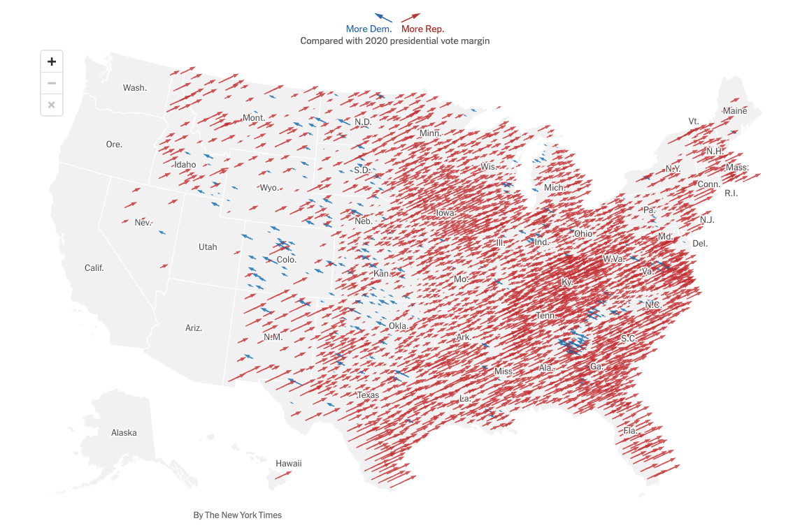
Or this one from the same article:
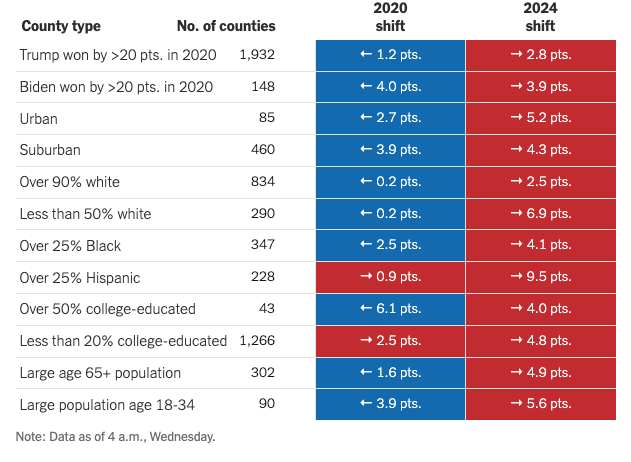
Or, the same story, but perhaps a better visualization in this FT article?:
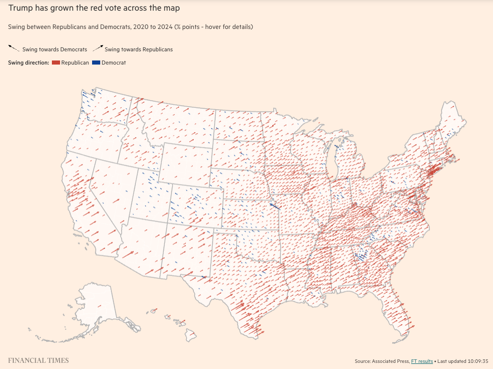
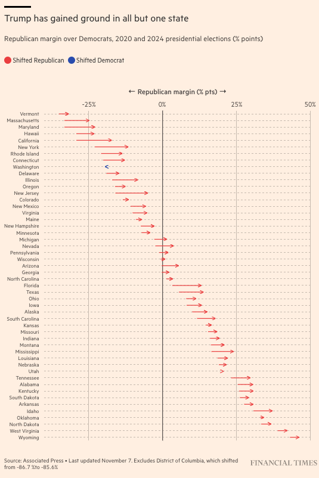
It’s really a red shift across the board. No matter which county or state, Trump’s vote share improved compared to 2020. Does it sound like a good example of ecological fallacy because these are basically county- and state-data? I suspected that initially, but not anymore after checking the exit poll results. Granted, it’s only on 10 swing states–but that’s all that matters, really.
The highlight of the exit poll, I think, is the gender-race tabulation:
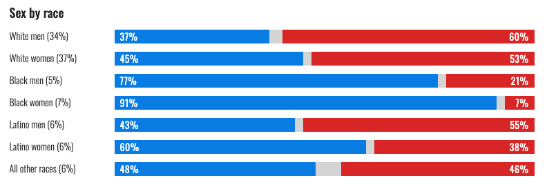
It challenges some of the existing narratives. It might depend on what your prior was like, but I don’t think that 77% of Black men voting for the Dem, with the caveat of not accounting for those who stayed home) is indicative of ‘black men abandoning Harris’ narrative. Nor is white women predominantly (53%) voting for Trump consistent with the expectation that the election was primarily about abortion. Harris getting not that many Latino men (43%) and women (60%) seems to question the implicit assumption that the broad Dem voting coalition includes Latinos.
Likewise, the data doesn’t seem to support the idea that Biden’s economic policies were too lefty (or too righty). For that to be at work (given their distributional implications), we should see a significant rally for Trump among centrist/moderate voters. Or there should probably be some notable patterns along income groups. We don’t seem to see that:
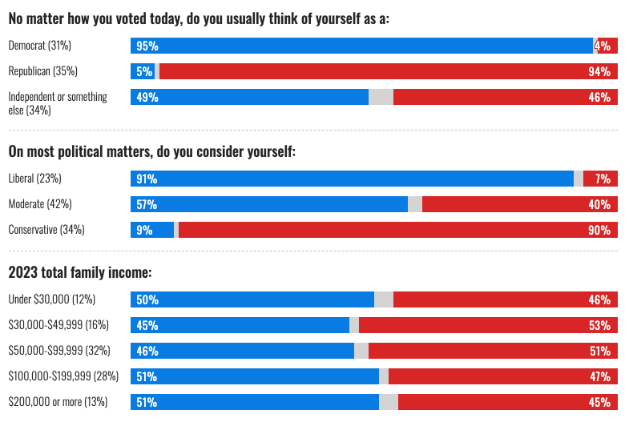 Maybe, moderate voters stayed home because they were spooked by the supposedly radical (anti-)distributional policies of Biden. But with 34% of the voters declaring themselves independent, I don’t know that number could be unusually large this year.
So, again, it’s a wide sweep. A rightward shift across almost all sociocultural and economic groups.
This wide and substantial a shift cannot be explained without looking at the issues associated with the fundamentals. In fact, in the same FT article, this bar graphs offers some answers for the question:
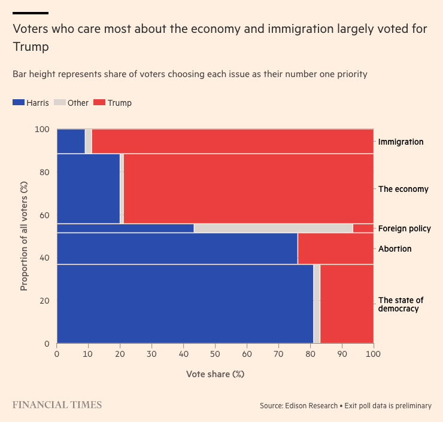
Trump supporters are much more likely say inflation and immigration are the top priority issues, compared to the Dem voters who tend to say democracy and abortion were important. Notable is how insignificant foreign policy is in the mind of voters from both sides. Be it Ukraine or Gaza, things outside of the US (once again) do not amount to the issue of primary significance for American voters.
This partisan divide in itself is not surprising, of course. Inflation and immigration are both retrospective voting issues where the incumbent is severely disadvantaged. What is (mildly) surprising is the sheer degree of its potency. It seems to have overwhelmed all other issues that people long suspected to be crucial–culture and identity issues in particular.
And it’s not even just the US. All around the world this year, the incumbents suffered electorally in a historically unprecedented manner. This FT graph summarizes it nicely:
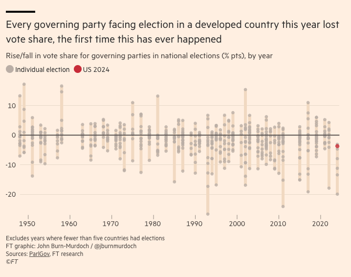
In Japan, India, France, and the UK, the incumbents lost votes significantly regardless of their ideological leanings. Two common factors are inflation and immigration. High prices and (perceived) social upheaval brew anxiety and fear, which are electorally potent. And what happened in the US–the electoral importance of these issues–can be understood in this context.
The prediction models published before the election now make a whole lot of sense. This Enns et al. paper, for example, near-perfectly predicts the result, if we look at the mode outcome of their simulations. The simulation result is intuitively visualized here:
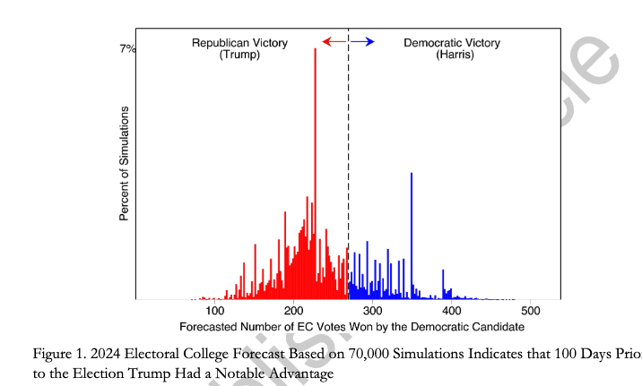
I don’t know what this really means at a more structural level. After all, American politics isn’t my field. One thing is pretty clear, though. As the literature has repeatedly suggested, retrospective voting dominates but voters are not necessarily well-informed. They vote holistically. Trump’s economic policies, for example, are perhaps more inflationary than Biden’s. But that either does not matter to most voters or is not least communicated very well to them. The influx of immigrants and how they ended up in big cities during the Biden admin does not really threaten the quality of life in suburban Midwesterners. But they would still be terrified to see the (perceived) disruptions in the cities and take them as signs of how the nation is going to a wrong direction. Migrants hosted in downtown hotels of the cities where chronic (and increasingly serious) homeless problems reported in the media would fuel the fear.
And people were pretty serious about all this. For instance, there are more Trump supporters than Harris’s among the first time voters, who are less likely to vote as a political habit. It takes them, compared to the ‘serial voters’, more to go out and vote (from the NBC’s Exit Poll article above)
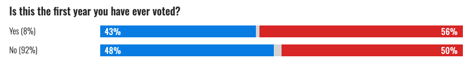 Nor were there many voters who remained on the fence for a while and reluctantly chose to vote:
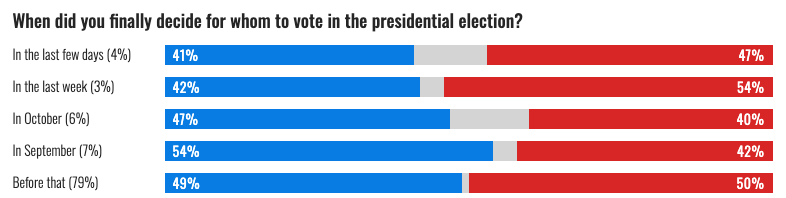
All along, people were terrified and they wanted to express it, whether that makes sense or not.
What that also implies is that with an alternative candidate, it would still have been an uphill battle for the Dems. The incumbent disadvantage was too hefty, it turns out. With quite a few people deciding to vote for Harris in September, in fact, Harris perhaps was a reasonably strong candidate who ran a good campaign.
So what happens now? I really don’t know. I find these words of Moynihan and Pepinsky compelling.